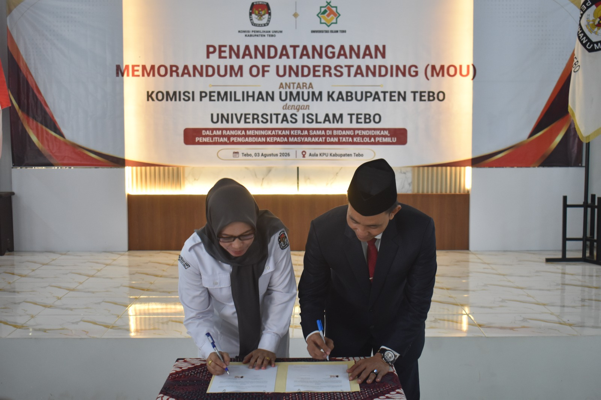

Kegiatan

KPU Kabupaten Tebo
KPU Kabupaten Tebo dan Universitas Islam Tebo Jalin Kerja Sama Strategis
Komisi Pemilihan Umum (KPU) Kabupaten Tebo resmi menjalin kerja sama dengan Universitas Islam Tebo melalui
Baca Selengkapnya →